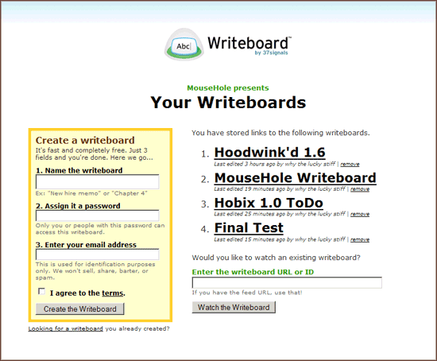

MouseHolin' Yer Writeboards #
How do you keep track of your various Writeboard documents? (I guess you can’t have created too many in the half-day since its launch.) Still, the day will come. Why not manage your Writeboards through MouseHole?

Here’s how to get it working:
- Make sure you’re running MouseHole as proxy.
- Visit the Writeboard user script and MouseHole will assist you in installation.
- Begin adding Writeboards at
http://mh/writeboards/.
See, here’s some incredible advantages over Greasemonkey and any other competition I’ve encountered. MouseHole allows user scripts to act as full web applications. In this case, the writeboard feeds are watched and applicable IDs and tokens are stored in the script’s own database.
Secondly, MouseHole can use that database when rewriting web pages! So, whenever you visit a Writeboard, you see subtle text in the corner indicating if the page is watched or not. If not, a link displays which offers to watch the page. I mean, geez, this toupee has a very snug fit. (Anyway, glad to hear of the Writeboard launch.)
why
If folks are interested, possible todo:
Rick Feynman
Holy Awesome!
Jeevan
Very nice. I’m finally starting to see the point of this hoodwink.d/mousehole thing you all have been talking about. :)
Julien Couvreur
A Greasemonkey userscript can also watch for writeboard IDs and tokens, store them and display them as part of the page.
Could you clarify what can be done with MouseHole than cannot be done with Greasemonkey? I’m missing the “incredible advantages” ;-)
why
Julien: Can Greasemonkey host web applications? MouseHole has a “doorway” where scripts can mount applications. When you visit
http://mh/writeboards/, for instance, you get the screen displayed above. It may seem like a minor advantage, but I’m discovering that it’s a big deal.Can GM write content into non-existant resources? If so, then I guess you could mimick this. Anyway, I’d really love to know.
Julien Couvreur
I don’t think you can write content on a non-existant resource directly, although something like that has been discussed, but you implement a writeboard list page in other ways.
Some that come to mind:There is a feature that was discussed but isn’t currently implemented that would allow to replicate the MouseHole behavior: allowing for custom “about:” urls. In this case, you’d use a script that runs on http://writeboard.com and about:writeboards (or something similar).
David
This is mighty cool, _why. Rock on!
why
Okay, Julien, good answers. The
about:URLs would be stellar, something that can be typed into the URL bar easily.David: Yes, but the script is like 300 lines, 1/3rd the size of Writeboard itself. And I’m okay with that! (A tale of excess.)
porges
Ack, how long until hoodwink.d is fixed?
Comments are closed for this entry.